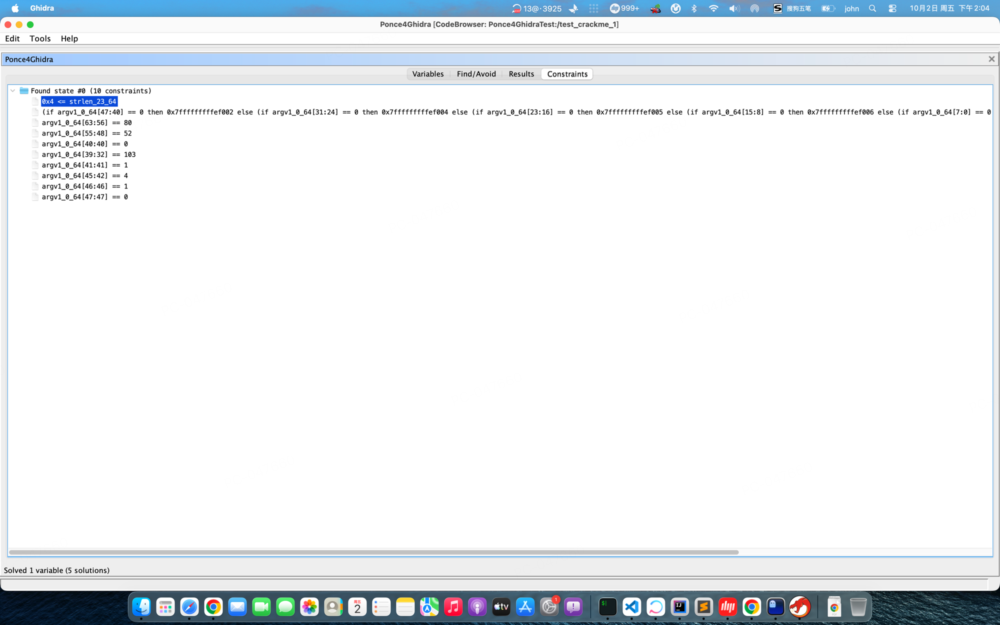

2. Right-click 0x1000004d7 (return 1) → Set as Find Target
3. Right-click 0x100000484 (return 0) → Set as Avoid
4. Ponce4Ghidra → Symbolize argv[1] (size: 4)
5. Solve Constraints → argv1 = P4Rg

Constraints tab: Z3's solution path — each constraint maps to a byte of the password P4Rg
How It Works
Not brute force, not fuzzing — equation solving. A 16-byte input has 2128 possibilities. The constraints reduce it to a system Z3 solves in seconds.
1
Symbolize — replace the input with a math variable argv[1] becomes a 4-byte unknown: BVS("argv1", 32)
2
Fork — at each branch on the symbolic input, explore both sides if (input[0] == 'P') → fork: one path adds constraint byte0 == 0x50, the other byte0 != 0x50
3
Collect — each path accumulates constraints as it runs Found path: byte0==0x50 ∧ byte1==0x34 ∧ byte2^0x42==0x10 ∧ byte3+0x20==0x87
4
Solve — send all constraints to Z3 Z3's CDCL engine solves the system in milliseconds → P4Rg
Features
Σ
Multi-Solution Solver
Find up to 5 alternative solutions per variable. A password may have multiple valid inputs.
C
Constraint Visualization
See every constraint the solver collected. Understand why a path is reachable — not just that it is.
V
Veritesting
Smart path merging at loop boundaries. Large binaries don't path-explode.
U
Unicorn Engine
Concrete blocks execute via Unicorn (fast), symbolic only at branches touching symbolic data.
↻
Session Persistence
Save/Restore sessions across Ghidra restarts. Your Find/Avoid targets and symbolization commands survive.
⚡
Live Progress
Status bar updates every second during exploration: active paths, found count, step number, elapsed time.
When to Use Which Symbolize
Method
Use when
Speed
Function Argument
You know which function checks the input. Analyzing a .so library. Binary is large.
Fast
argv[N]
Program reads input from command line. Binary is small/simple. Need whole-program context.
Medium
Register
The unknown is a scalar (int/long), not a buffer.
Fast
Memory
The unknown is at a known fixed memory address (global variable, struct field).
Fast
Rule of thumb: start with Function Argument. Use argv only when you need the entire program's execution context.